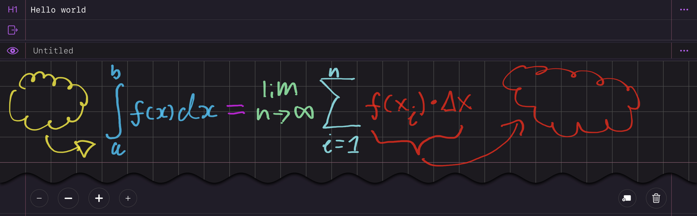

About Me
Hello, my name is Colbyn Wadman and I’m a problem solver, thinker, aspiring academic, and part time entrepreneur.
hello@colbyn.com
“I solve problems.”
801-367-4487
Hello, my name is Colbyn Wadman and I’m a problem solver, thinker, aspiring academic, and part time entrepreneur.
In my first semester at UVU I took CS1400 by professor Bianca Ruiz, whom then offered me a grading position at the end of the semester.
Jr. developer in the QA team lead by Asiel Brumfield.
Data center tech, worked with Robert Raver.
Brief summer internship, back when I was 16 or 17, under my mentor, Tom Metge (when their office was located in Murray).
I’ve been writing my own note taking tools in college, including this site. I also wrote the toolchain that compiled the HTML pages into the final result.
https://colbyn.github.io/school-notes-spring-2020/
Regarding the link, technically it should be ‘spring-2021’.
Be advised, the site may take a second to load since it contains multiple semesters worth of math notes and the math formulas are compiled from LaTeX markup at runtime using a JavaScript compiler. Can also be accessed via the colbyn.com proxy (though it may change in the future).
A static site generator for publishing freeform content on the web (via an iOS app and your Apple Pencil), such as your school notes.
With Subscript you can build your own websites with your own hand drawn notes and is optimized for speed using (linkable) hierarchical organization without flipping through pages.
Example, my old freeform chemistry notes compiled via the app (pretty cool),
https://content.subscript.app/dev/chemistry-1010---fall-2021/index.html
I’ve also been experimenting with an associated markup language (which I hope will one day become popular in academia), of which I’d like to eventually integrate into the Subscript MacOS/iOS app using a custom text editor that supports 🌈 brackets (which isn’t possible using traditional contextless parsing methods).
Optimizes the compression using ML based metrics (using Netflix's VMAF tool) in a trial and error manner.
Full-Stack
MacOS/iOS development
UIKit, AppKit, and SwiftUI ❤️
Video
Parsing
Compilers
Functional Programming ❤️
Type Systems
Rust ❤️
Swift ❤️
Haskell
PureScript
Elm
Julia
Python
HTML/CSS/JavaScript
LaTeX
Freeform note taking, designed and implemented by myself, with an in-app HTML compiler for publishing your notes. Notice the ‘H1’ row.
| The Imager Landing Page | imager.io | |
| My Beautiful Math Notes | colbyn.github.io/school-notes-spring-2020/ | (This was the forerunner to Subscript.) |
| My Personal GitHub Profile | github.com/colbyn | |
| The Imager GitHub Organization | github.com/imager-io | (Showcases my experience with low-level video codecs.) |
| The online version of this résumé | colbyn.github.io/resume-2023/ | |
| This is what Bash should look like | github.com/colbyn/commands |